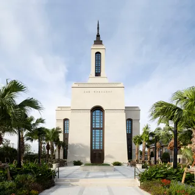

Temple Album
Home
Old
New
Large
Small
Home
Las Vegas, NV Temple
Belem, Brazil Temple
Kona, HI Temple
Lisbon, Portugal Temple
London, England Temple
Los Angeles, CA Temple
Madrid, Spain Temple

Okinawa, Japan Temple
Salt Lake City, UT Temple